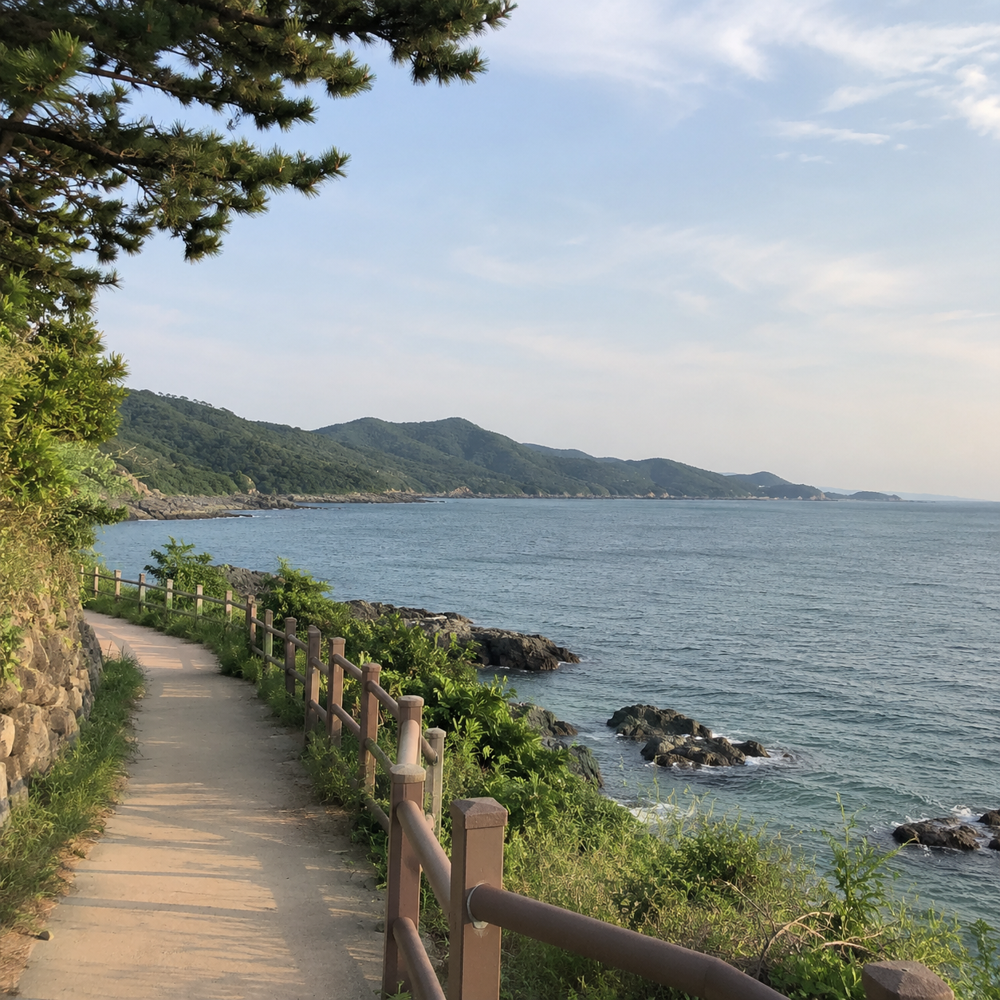
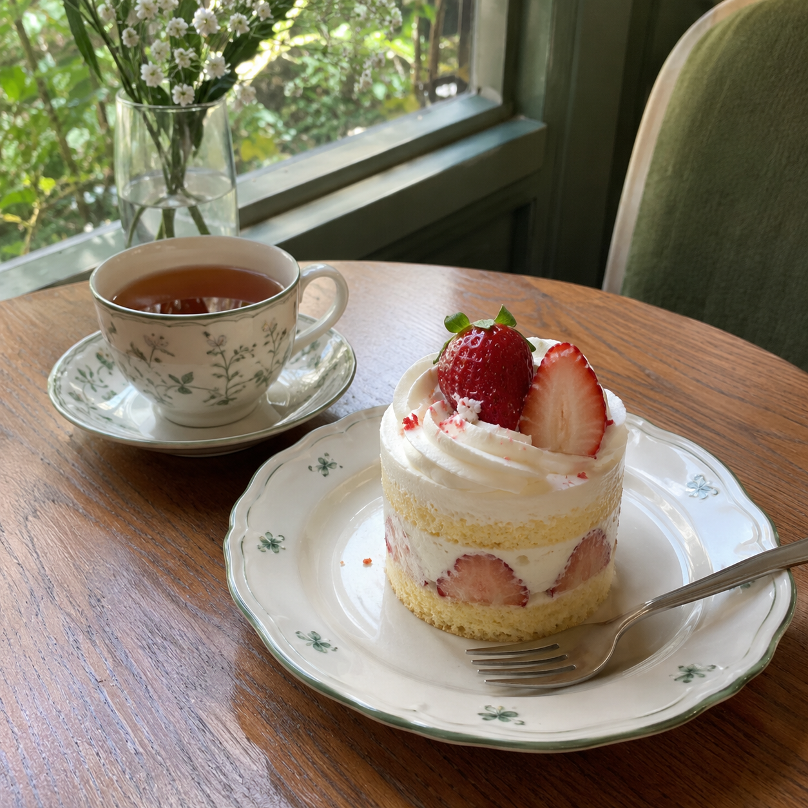
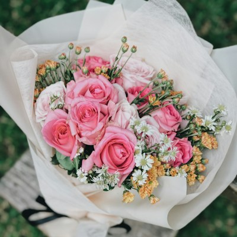
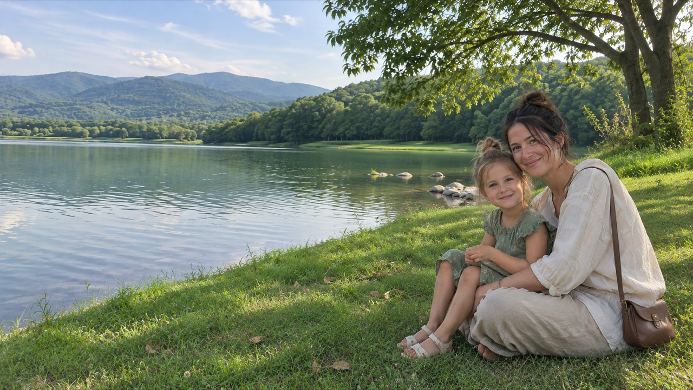
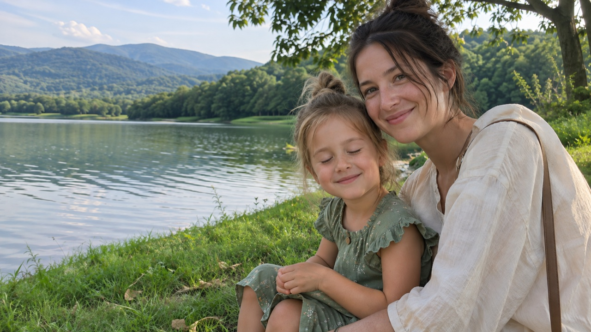
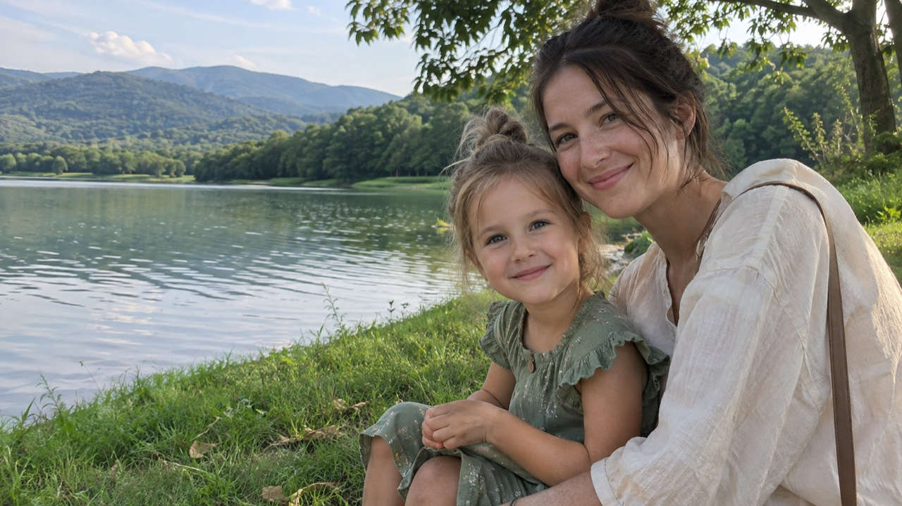

01
내 취향을 알려줘요.
좋아하는 사진과 공통 정리 기준을
설정해요. 취향은 언제든 바꿀 수 있어요.



LESS DATA. MORE MOMENTS.
내 취향과 기준으로 정리하고,
남길 사진은 직접 고르세요.
고르게, 고르고, 고른.



작은 표정까지,
놓치지 않게.
사진·확대 비교 예시
비슷한 사진은 쌓이고,
다시 보고 싶은 순간은 묻히니까.
더 많이 저장하는 일보다,
더 잘 남기는 일.
YOUR PHOTOS. YOUR WAY.
취향에 맞추고, 이야기로 더하고.
사진 속 내가 찾던 순간을 모아봐요.
좋아하는 사진과 공통 정리 기준을
설정해요. 취향은 언제든 바꿀 수 있어요.



정리할 사진을 고르고, 이번에 남기고 싶은
순간을 적어요. 이야기는 건너뛰어도 돼요.
풍경도 함께 담긴,
아이가 웃는 순간을 남겨줘.
남길 후보와 선택 근거를 확인해요.
비교가 필요한 부분은 확대해서 보여줘요.
THE FINAL CHOICE IS YOURS.
사진마다 확대하고, 앞뒤로 오갈 필요 없이.
전체 구도와 작은 표정을 함께 살펴보세요.
아이의 눈과 미소가 함께 담겨 있어요.
이 순간을 골랐어요. 실제 내 사진 정리는 고른 체험판에서 시작해 보세요.
선택하지 않은 사진도 바로 삭제하지 않아요.
정리할 사진으로 따로 모으고, 마지막 선택은 내가 해요.
DIFFERENT MOMENTS. SAME GOREUN.
여러 장 속에서 내가 찾던 그 순간.
비슷해 보여도 놓치고 싶지 않은 표정.
내가 보여주고 싶은 분위기로 고르는 한 장.